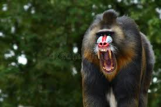

Mandrills:
Mandrills are primates of the Cercopithecidae family,
that superficially look like baboons but are more
closely related to the Cercoebus Mangabeys.
They are found throughout Southern Cameroon, Gabon,
Equatorial Guinea, and Congo but they mostly live in
tropical rainforests and in very large groups.
Interesting Fact: Mandrills are (as of now) the world's
largest monkeys. However, they are classified as a
vulnerable species by the
IUCN

Source:
https://en.wikipedia.org/wiki/Mandrill